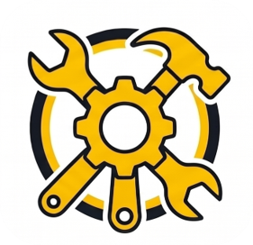
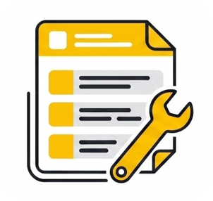

Solusi Presisi untuk
Kinerja Industri
Tingkatkan efisiensi dan keamanan lapangan dengan tiga aplikasi pilar kami: Techkit, Techform, dan Techcam. Terintegrasi, tangguh, dan mudah digunakan.
Etalase Aplikasi
Satu ekosistem lengkap untuk menunjang segala kebutuhan operasional teknisi di lapangan.

Techkit
Alat bantu teknisi digital. Akses skema, kalkulasi teknis, dan referensi manual dalam satu genggaman.

Techform
Sistem formulir keamanan dan audit digital. Buat JSA, inspeksi, dan laporan dengan tanda tangan elektronik.
Techcam
Dokumentasi visual proyek dengan anotasi pintar, watermark presisi, dan sinkronisasi metadata temuan.
Pusat Panduan
Temukan cara instalasi, pengaturan awal, dan jawaban atas pertanyaan umum.


Berita & Pembaruan
Informasi rilis terbaru dan roadmap pengembangan ekosistem.
Pembaruan Auto-Watermark di Techcam
Penambahan fitur sinkronisasi template watermark dan automasi unit/temuan pada aplikasi Techcam untuk mempercepat pelaporan dokumentasi visual.
Porting JSEA Generator ke Desktop (Electron)
Kami sedang mengembangkan versi desktop mandiri dari JSEA Maker menggunakan Electron.js untuk pengguna Windows dengan kapabilitas offline yang tangguh.